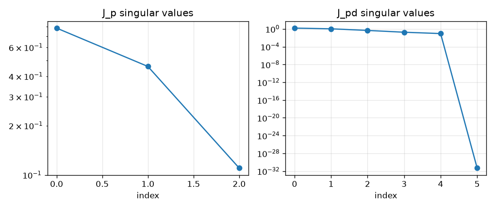
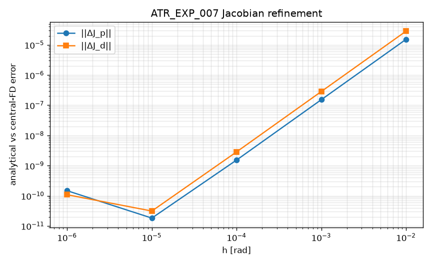

ATR_EXP_006 — Regular configuration rank suite PASS
Expected. rank(J_p)=3, ker dim 3, J_pd rank 5 nullity 1 aligned to e6, rank(J_d N_red)=2
Observed. rank_jp=3, null_jp=3, rank_jpd=5, null_jpd=1, align=0.000e+00, rank_jd_nred=2

Stage A differential reduction · Implementation complete / Check-in 2 draft · M2 — Two-dimensional reduction established
This readout does not authorize compound-joint, continuation, or spherical-four-bar work. Check-in 2 remains a human gate.
At regular aligned-terminal 6R configurations, rank(J_p)=3, rank(J_pd)=5 with ker(J_pd) aligned to e6, and rank(J_d N_red)=2.
For the GenericAligned6R skew reference chain, the named regular configuration and all 48 seeded configurations satisfy the expected local fixed-position and position-and-pointing ranks. Terminal roll is the sole task-kernel direction, and the quotient fixed-position tangent space has rank-two pointing motion. This establishes the numerical Stage A reference result but does not yet establish architecture independence or global continuation.
Expected. rank(J_p)=3, ker dim 3, J_pd rank 5 nullity 1 aligned to e6, rank(J_d N_red)=2
Observed. rank_jp=3, null_jp=3, rank_jpd=5, null_jpd=1, align=0.000e+00, rank_jd_nred=2

Expected. analytical vs central-FD Jacobian error converges over usable h
Observed. h=0.01: jp=1.528e-05, jd=2.853e-05; h=0.001: jp=1.528e-07, jd=2.853e-07; h=0.0001: jp=1.528e-09, jd=2.851e-09; h=1e-05: jp=1.824e-11, jd=3.119e-11; h=1e-06: jp=1.473e-10, jd=1.086e-10

Expected. full-chain dp/dq6=0, dd/dq6=0, position/pointing invariant, roll recovers Delta q6
Observed. ||J_p e6||=6.015e-17, ||J_d e6||=0.000e+00, |dp|=0.000e+00 m, |dd|=5.551e-17, roll_err=4.441e-16 rad, axis_mis=2.388e-16
Expected. off-axis p makes J_p e6 nonzero; misaligned d makes J_d e6 nonzero
Observed. off-axis ||J_p e6||=3.000e-02; misaligned ||J_d e6||=2.474e-01
Expected. regular subset supports C6-C8; named sample is singular or near-singular and labeled separately
Observed. survey regular=48/48, singular_jp=0, named rank_jp=3, named_sigma_ratio=1.431e-02, median_regular_sigma_ratio=2.240e-01

Pending human Check-in 2. If approved, next stage is architecture comparison (generic vs compound-joint vs UR-like), not spherical four-bars.